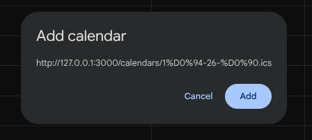

Найпростіше — кнопки на головній: "В Google-календар" або "Інший календар".
Підписатись можна тільки через веб-версію. Натисніть на кнопку "В Google-календар" та погодьтесь на додавання

Натисніть на кнопку "Інший календар", введіть назву календаря до натисніть на кнопку "Додати"
Кнопка «Лінк» на головній дає адресу .ics-файлу твоєї групи — її розуміє будь-який календарний застосунок.